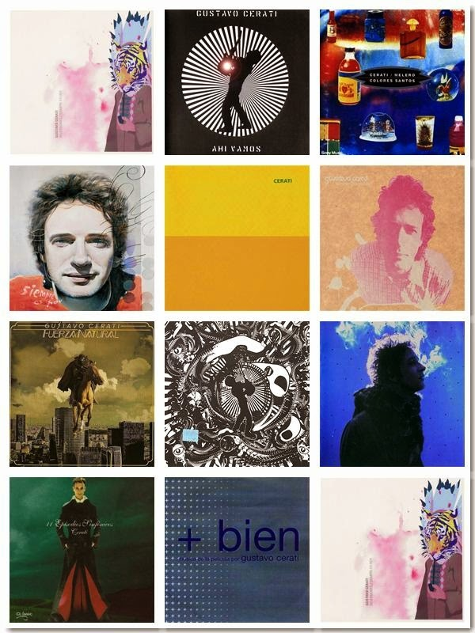

Influido primero por The Beatles y posteriormente por The Police, Cerati integró diversas agrupaciones desde su adolescencia y en 1982 fundó la banda de rock latino Soda Stereo. Líder y principal compositor del conjunto, a partir de Signos (1986) su forma de hacer canciones comenzó a madurar, y su consolidación la alcanzó a comienzos de los años 1990 con Canción animal, en el que volvía a las raíces del rock argentino de los años 1970. |
|
Después de la separación de Soda Stéreo, Gustavo empezó su camino en solitario que lo terminó de posicionar como uno de los músicos más importantes del rock en español. |

Gustavo Cerati (11 de agosto de 1959 – 4 de septiembre de 2014), músico y cantante argentino. Nació en la capital argentina, Buenos Aires. |
|

Las palabras “Gracias Totales” fueron pronunciadas por Gustavo Cerati al finalizar el show de Soda Stereo, en marzo de 1997 en el Estadio de River Plate en Argentina, es decir, han pasado casi 23 años de aquella presentación que reunió alrededor de 70 mil personas. El denominado “El último concierto de Soda Stereo” empezó con las palabras de Cerati: “Llegó la hora, el minuto, el segundo, el instante. Supongo que tienen sed ¡Soda Stereo, Buenos Aires, Argentina!”. Seguido de los acordes de La ciudad de la furia y la pregunta clave para esa noche “¿Están preparados para una noche larga?“. Aquella noche inolvidable, Soda Stereo tocó 20 temas y se despidió con la clásica De música ligera y una frase que inmortalizó a una de las bandas más importantes de Latinoamérica el “Gracias totales”. |
|
|